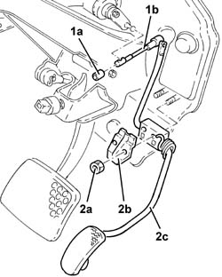

1068A18 ACCELERATOR PEDAL - R.R. for versions with electro-hydraulic selection manual gearbox
- Path
- Procedures > 10 ENGINE > 1068 ACCELERATOR CONTROLS > 1068A accelerator pedal control > 1068A18 ACCELERATOR PEDAL - R.R. for versions with electro-hydraulic selection manual gearbox
- Kind
- repair procedure (removal / refitting; the operation number is the code)
- Applies to
- all engines; all production periods
- Interactive page
- https://sloeber94.github.io/elrnDB-a156/en/#/3237690
Applies to: all engines; all production periods; only with equipment: Smart gearbox
 Removing
Removing
 Refitting
Refitting1. Remove the clip (1a) and disconnect the rod (1b) from the accelerator pedal potentiometer.
2. Undo the nuts (2a), then move the bracket (2b) and accelerator pedal (2c).

Applies to: all engines; all production periods; only with equipment: Smart gearbox
Refitting
RemovingFit the accelerator pedal and fix it using the bracket and nuts.
Connect the rod to the accelerator pedal potentiometer and fix it using the clip.
When refitting the accelerator pedal, adjust it as described below.
Make sure that the ignition key is in the OFF position.
Connect the tool to the diagnostic socket and place the knob in position 3.
 | Name | Country |
|---|---|---|
- | MPX 97 switch | 1.806.365.000 |
Connect the Examiner diagnostic equipment.
Turn the ignition to the ON position).
Using the Examiner, enter the "Parameters" field.
Press "Selection" and select the "Accelerator position track 1" parameter.
Check that the potentiometer's calibration conforms to the specified values:
when idling (accelerator pedal released), < 17%
fully open (accelerator pedal fully depressed), 73% ¸ 78%.
If the setting is not as specified, adjust the accelerator pedal travel by means of the accelerator pedal travel stop.
Remove the diagnostic equipment.